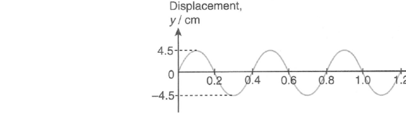
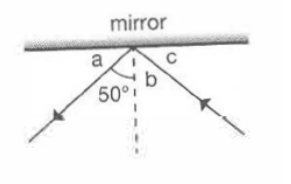
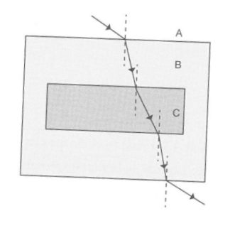
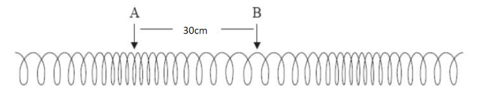
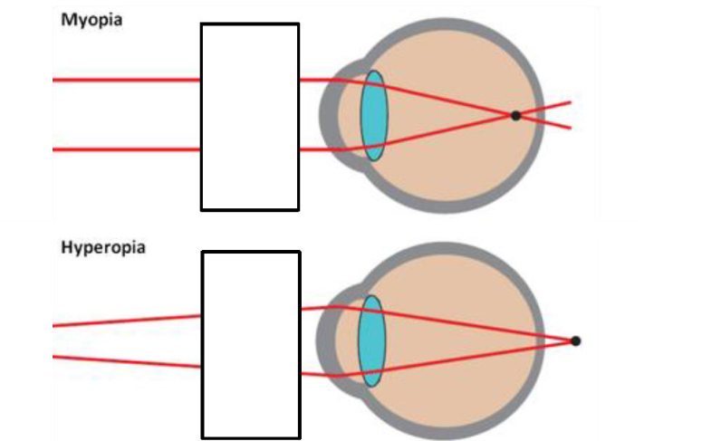
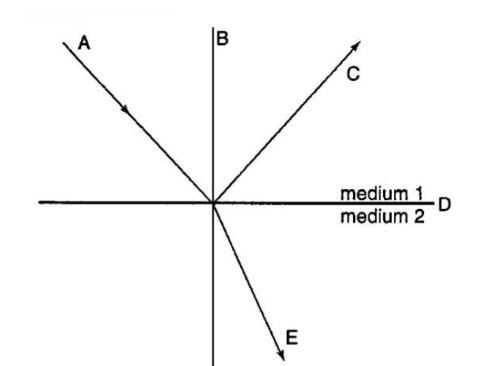
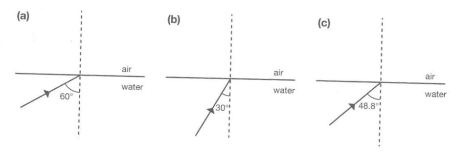

Section A: Multiple choice (9 marks)
The pitch and wavelength of a high-frequency wave would be:
Use the diagram below to answer Questions 2 to 4.

What is the amplitude of the wave?
What is the frequency of the wave?
The period is 0.4 s, so f = 1 ÷ 0.4 = 2.5 Hz.
How many complete waves are shown?

Using your understanding of reflection and angles, find the size of each angle in the diagram.
The angle of incidence equals the angle of reflection, so b = 50°. The normal is at 90° to the mirror, so a = c = 90° − 50° = 40°.
Which part of the eye helps refract light, and what type of lens is it?
A group of friends is sitting around a campfire on a cold night. They all feel warm even though they are sitting some distance from the fire. Which best explains the heat transfer that makes them feel warm?
Which scenario correctly matches the optical property with its description?

Based on the way the light bends, which option lists the materials from highest to lowest speed of light?
Light bends towards the normal when it slows down and away from the normal when it speeds up. It bends most towards the normal in B, so B is slowest; it is fastest in A.
Section B: Short answer (34 marks)
Question 1 (7 marks)
This wave is created when one end of a stretched slinky moves back and forth. The distance between A and B is 30 cm. The speed of the wave through the slinky is 15 m/s.

- The name of this type of wave:
- An example of a type of energy that travels this way:
- The name of part A of the wave:
- The name of part B of the wave:
Calculate the wavelength, in metres.
From the middle of a compression (A) to the middle of the next rarefaction (B) is half a wavelength, so λ = 2 × 30 = 60 cm = 0.6 m.
Calculate the frequency, in hertz.
f = v / λ (1 mark) = 15 ÷ 0.6 = 25 Hz (1 mark).
Question 2 (4 marks)
Myopia (short-sightedness) and hyperopia (long-sightedness) are corrected with lenses.

The type of lens needed to correct each condition:
Myopia:
Hyperopia:
On paper, draw where the incoming light rays would be redirected by each lens. (Use a ruler.) Describe them, then compare.
- Myopia: the concave lens spreads the rays out (diverges them), so the eye's lens then focuses them on the retina (1 mark).
- Hyperopia: the convex lens bends the rays inwards (converges them), so they focus on the retina instead of behind it (1 mark).
Question 3 (6 marks)
The diagram represents a situation involving the refraction of light.

Which of the lines labelled A–E is the:
- normal?
ii. incident ray?
iii. refracted ray?
iv. reflected ray?
What could be a reasonable example of medium 1 and medium 2?
Medium 1: air; medium 2: glass (or water). The light bends towards the normal as it enters medium 2, so medium 2 is optically denser.
Explain what happens to the speed of light as it crosses the boundary from medium 1 into medium 2. How do you know this?
The light slows down as it enters the denser medium (1 mark). We know this because it bends towards the normal (1 mark).
During the Year 9 school production, the lighting team uses stage lights of different colours. Complete the table by writing the missing colour.
| Light 1 | Light 2 | Resulting colour |
|---|---|---|
| Green | Blue | |
| Red | Yellow |
Question 5 (5 marks)
Tim cooks sausages over the campfire using a metal frying pan with a metal handle. When the sausages are cooked, the handle is hot, even though it was not near the flames.
Name this method of heat transfer:
Describe (and sketch on paper) how heat moves along the handle to his hand, showing what the particles are doing.
Heat flows from the hot end (near the fire) towards the cooler end (his hand). The hot particles vibrate faster and bump into their neighbours, passing on kinetic energy (1 mark); in metals, free (delocalised) electrons also carry heat energy quickly along the handle (1 mark).
Define thermal equilibrium and describe what happens to the temperature of the metal handle when it reaches thermal equilibrium.
Thermal equilibrium is the state in which there is no net heat transfer, because all parts of the system are at the same temperature (1 mark). The handle stops getting hotter: its temperature stays constant (1 mark).
Question 6 (4 marks)
Firmino the dolphin is hunting a school of salmon using echolocation off the coast of Brazil. Firmino creates sound waves with a frequency of 8525 Hz, each with a wavelength of 17 cm. Firmino detects the echo after 0.3 seconds.
Calculate the speed of the sound in water.
v = f × λ = 8525 × 0.17 (1 mark) = 1449 m/s (1 mark).
Calculate the distance between Firmino and the salmon.
The sound travels there and back in 0.3 s, so the one-way time is 0.15 s. d = v × t = 1449.25 × 0.15 (1 mark) = 217 m (1 mark).
Question 7 (3 marks)
The critical angle for light travelling from water into air is 48.8°.

What happens to each ray at the surface?
(a) 60°:
(b) 30°:
(c) 48.8°:
Above the critical angle the light is totally internally reflected; below it, the light refracts out (away from the normal); at exactly the critical angle the refracted ray runs along the surface.
Question 8 (3 marks)
In a mobile phone network, microwave signals carry data between towers and devices. One signal has a wavelength of 30 cm. The speed of electromagnetic radiation is 3 × 108 m/s. Calculate the frequency of this microwave radiation. (You can type it as 1e9 or 1×10^9.)
λ = 30 cm = 0.30 m. f = v / λ = 3 × 108 ÷ 0.30 (1 mark) = 1 000 000 000 Hz (1 mark) = 1 × 109 Hz in scientific notation (1 mark).